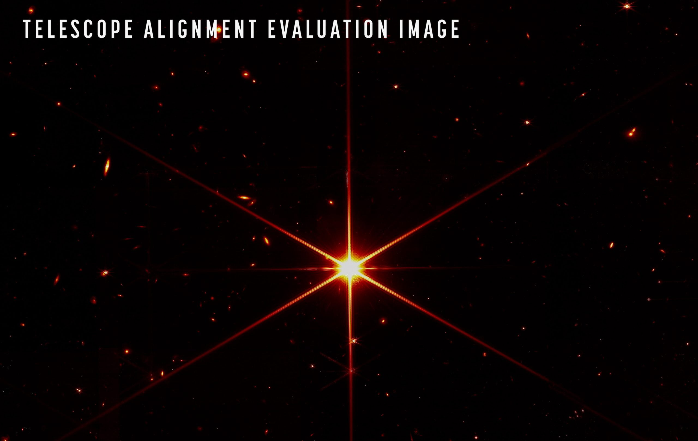

ဒီ သတင်းစာ ရှင်းလင်းပွဲမှာ တာဝန်ရှိသူတွေက ဒီ James Webb တယ်လီစကုပ်ကြီးက ဖမ်းယူရရှိတဲ့ ပုံရိပ်တွေက မျှော်မှန်း ထားခဲ့တာ ထက်တောင် ပိုပြီး ကြည်လင် ပြတ်သားမှု ရှိနေတဲ့ အနေအထား တွေ့ကြရတယ်လို့ ပြောကြား ခဲ့ပါတယ်။
ဒီ သတင်းစာ ရှင်းလင်းပွဲ မှာပဲ James Webb တယ်လီစကုပ်ကြီးကနေ ရိုက်ကူးထားတဲ့ ကြည်လင် ပြတ်သားတဲ့ ဓါတ်ပုံ တစ်ပုံကိုလဲ ထုတ်ပြခဲ့ပါတယ်။ ဒီပုံကတော့ 2MASS J17554042+6551277 ကြယ်ရဲ့ ဓါတ်ပုံပဲ ဖြစ်ပါတယ်။
“အခု အချိန်မှာ ဒီ တယ်လီစကုပ်ကြီးရဲ့ အလင်းပြန် မှန်ချပ်တွေဟာ ကျွန်တော်တို့ “diffraction limited alignment” လို့ ခေါ်တဲ့ ကြည်လင်ပြတ်သားမှု အဆင့်ကို ရရှိနေပြီ ဖြစ်ပါတယ်။ ဒါက ဘာကို ဆိုလိုသလဲ ဆိုတော့ အခု ရရှိတဲ့ ကြည်လင် ပြတ်သားမှုဟာ ဒီအရွယ် တယ်လီစကုပ် ကြီးတစ်ခု အတွက် ရူပဗေဒ နိယာမတွေ က ခွင့်ပြုတဲ့ အဆုံးစွန်သော ကြည်လင် ပြတ်သားမှု အဆင့်ကို ရရှိသွားတာပဲ ဖြစ်ပါတယ်။
ဒါဟာ ဒီအရွယ်အစား ရှိတဲ့ တယ်လီ စကုပ်ကြီး တစ်လုံးအတွက် ဖြစ်နိုင်တဲ့ အကောင်းဆုံး ကြည်လင် ပြတ်သားမှုပဲ ဖြစ်ပြီး ဒီ့ထက် ပို ကြည်လင်တဲ့ ပုံရိပ် ရဖို့ မဖြစ်နိုင် တော့ဘူးလို့ ဆိုပါတယ်။
အခု နာဆာက ထုတ်ပြန်လိုက်တဲ့ ဓါတ်ပုံကို သေချာကြည့်ရင် ကြယ်ရဲ့ နောက်ခံမှာ ဂလက်ဆီတွေ အများအပြားကို ကြည်လင်စွာ တွေ့နိုင်ကြမှာ ဖြစ်ပါတယ်။ ဒီ ဂလက်ဆီ ပုံတွေရဲ့ ထူးခြားချက် ကတော့ လူ့မျက်စေ့နဲ့ မမြင်နိုင်တဲ့ အနီအောက် ရောင်ခြည် လှိုင်းတွေကို ဓါတ်ပုံ ရိုက်ယူထားခြင်းပဲ ဖြစ်ပါတယ်။
နာဆာ ပညာရှင် တွေရဲ့ အဆိုအရ ဂျိမ်စ်ဝက်ဘ် ရဲ့ အလင်းပြန် ကြေးမုံ မှန်ချပ်တွေ အဏုစိတ် ချိန်ညှိမှု အနည်းငယ် ထပ်လုပ်ဖို့တော့ လိုသေးတယ်လို့ ဆိုပါတယ်။ ဒီအခါ ကျရင်တော့ အတိအကျ ကြည်လင် ပြတ်သားတဲ့ ပုံရိပ်တွေကို ရရှိလာ လိမ့်မယ်လို့ ဆိုပါတယ်။

ဂျိမ်းစ်ဝက်ဘ် တယ်လီစကုပ်ကြီး နေရာချမှု အဆင့် ၇ ဆင့် ရှိတဲ့ အနက် အခုထိ အဆင့် ၅ ဆင့်ကို အောင်မြင် ပြီးမြောက် ခဲ့ပြီ ဖြစ်ပါတယ်။
“အခုအချိန်မှာ တယ်လီစကုပ် ကြီးရဲ့ ကြေးမုံ ၁၈ ချပ် စလုံးဟာ ကြေးမုံမှန်ချပ်ကြီး တစ်ချပ် ကဲ့သို့ အလုပ်လုပ်နေပါပြီ။ ပြီးခဲ့တဲ့ တနင်္ဂနွေ နေ့က ပထမဆုံး ရရှိတဲ့ ပုံရိပ်မှာ မြင်ရတဲ့ အတိုင်း ဒီ မှန်ချပ်ကြီးရဲ့ အလင်းပြန် စွမ်းဆောင်ချက်ကတော့ အံ့မခန်း ပါပဲ” လို့ နာဆာက တယ်လီစကုပ် မှန်ဘီလူး တွေနဲ့ ပါတ်သက်တဲ့ ကျွမ်းကျင်သူ Lee Feinberg ကလဲ ရှင်းပြပါတယ်။
အခု ရရှိတဲ့ ဓါတ်ပုံ ရရှိဖို့ ကင်မရာက အချိန် စက္ကန့်ပေါင်း ၂၁၀၀ (၃၅ မိနစ်) ကြာအောင် ရိုက်ကူး ခဲ့ရတာ ဖြစ်ပါတယ်။ ဒီ ဓါတ်ပုံ ရိုက်ကူးနေချိန် အတွင်း အလင်းပြန် စွမ်းဆောင်မှုတင် မက အခြား အီလက်ထရောနစ် အစိတ်အပိုင်းတွေရဲ့ အလုပ် လုပ်ကိုင်မှု ကိုလဲ လေ့လာ ဆန်းစစ် နိုင်ခဲ့ပါတယ်။
တယ်လီစကုပ်ကြီးရဲ့ လမ်းကြောင်း ညွှန်ပြတဲ့ ကိရိယာ တွေနဲ့ ဦးတည်ရာ လမ်းကြောင်းထိန်း ကိရိယာတွေ အားလုံးဟာလဲ ပုံမှန်အတိုင်း အလုပ်လုပ်ကြတာကို တွေ့ကြရ ပါတယ်။
“ဒီ အစိတ်အပိုင်းတွေ အားလုံး အလုပ်လုပ်မှန်း ကျွန်တော်တို့ သေချာ သိရပါတယ်။ ဘာလို့လဲဆိုတော့ ကျွန်တော်တို့ ရရှိတဲ့ ကြယ်ဓါတ်ပုံဟာ ကြယ်တစ်စင်းနဲ့ အတိအကျ တူနေလို့ပဲ ဖြစ်ပါတယ်” လို့ သူက ဆက်ရှင်းပြပါတယ်။
“ဒီ တယ်လီစကုပ် ကြီးကို နက္ခတ်သိပ္ပံ ပညာရှင်တွေ လက်ထဲ လွှဲပြောင်းပေးဖို့ အဆင်သင့် နီးပါး ဖြစ်နေပါပြီ” လို့လဲ သူက ဝမ်းသာအားရ ဆက်ပြောပါတယ်။
အခု ဓါတ်ပုံ ရိုက်ယူခဲ့တဲ့ 2MASS J17554042+6551277 ကြယ်ဟာ သာမန် မထင်မရှား ကြယ်လေး တစ်စင်းသာ ဖြစ်ပါတယ်။ သူ့ရဲ့ အလင်းရောင် ကလဲ လူ့မျက်စေ့က မြင်နိုင်တဲ့ အမှိန်ဆုံး ဆိုတဲ့ အလင်းထက် အဆ ၁၀၀ လောက် ပိုမှိန်ပါသေးတယ်။ ဒါပေမယ့် ဓါတ်ပုံထဲမှာ မြင်ရတဲ့ အတိုင်း တယ်လီစကုပ်ကြီး ကြောင့် လင်းထိန် တောက်ပစွာ မြင်နေ ကြရတာပါ။
နာဆာ ပညာရှင် တွေက ဒီ တယ်လီစကုပ်ကြီးကို ဇွန်လကုန်က စလို့ လုပ်ငန်း စတင် နိုင်လိမ့်မယ်လို့ မျှော်လင့် ထားကြပါတယ်။ ကြေးမုံမှန်ချပ်တွေ အဆင်သင့် ဖြစ်ပေမယ့် အင်ဖရာရက် အနီအောက် ရောင်ခြည် အာရုံခံ ကိရိယာ တစ်ခုကို 7° K အပူချိန် (သုညအောက် -266 ℃) အပူချိန်ထိ ရောက်အောင် အအေးခံဖို့ အချိန်ယူရမှာကြောင့် ဖြစ်ပါတယ်။
Reference: Webb has Now Taken the Sharpest Image the Laws of Physics Allow | Universe Today